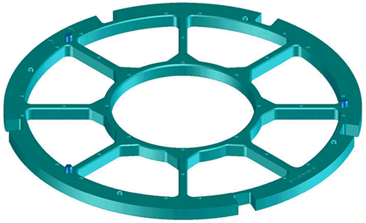
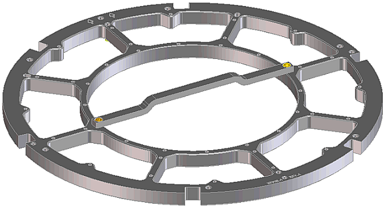
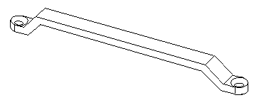

WPI probe card stiffeners and handles
Stiffeners
9.5" and 12" WPI probe card stiffeners, E7018DA and E7018LA, are hard chromium electroplated steel frames which give the probe card the necessary mechanical stability to withstand the pressure of the pogo pins on one side and the pressure from the chuck on the other side. This ensures the long term probe card flatness which is essential for reliable die contacting. You can also manufacture the probe card stiffener from stainless steel. The figures below show the 9.5" WPI and the 12" WPI probe card stiffener.
- 9.5" WPI probe card stiffener (E7018DA)

For design drawings, refer to Probe card stiffener for 9.5" WPI (E7018DA) in Probe card stiffener (Prober solutions).
- 12" WPI probe card stiffener with handle (E7018LA)

For design drawings, refer to Probe card stiffener for 12" WPI (E7018LA) in Probe card stiffener (Prober solutions).
Due to the smaller area of the probe card, the pressure exerted on the probe card by the pogo pins will be significantly higher than the pressure exerted on the larger DUT boards.
Drawings D-E7018-24102 (9.5") and D-E7018-24155 (12") show the mechanical dimensions, tolerances, and machining instructions for the probe card stiffeners.
Handles
Drawings B-E7018-24901 (9.5") and B-E7018-24955 (12") of the probe card stiffener handles (shown below) show the mechanical dimensions, machining instructions and tolerances. Attach the handle to the probe card stiffener with M3x8 screws, head type flat Torx. Follow the notes on the drawing's left corner.

For design drawings, refer to Probe card stiffener (Prober solutions).
Functional changes
- Introduced before SmarTest 6.3.2